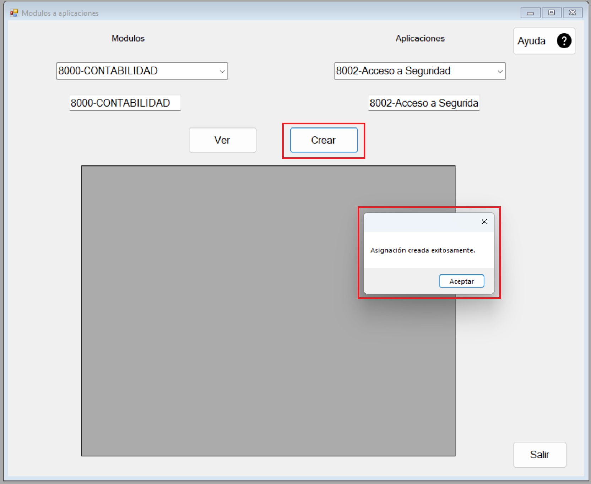

1. El formulario consta de dos listas desplegables, Modulos y Aplicaciones y una tabla para poder visualizar la información.

2. Seleccionamos Modulo y Aplicaciones deseado en la lista y siempre nos tira un mensaje de que valos ah sido seleccionado.

3. Le damos clic al boton Crear y los datos son ingresados exitosamente.
4. Damos clic en el boton de Ver y nos mostrara todos los registros.

5. También tenemos el boton Salir y salirnos del formulario.